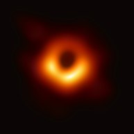
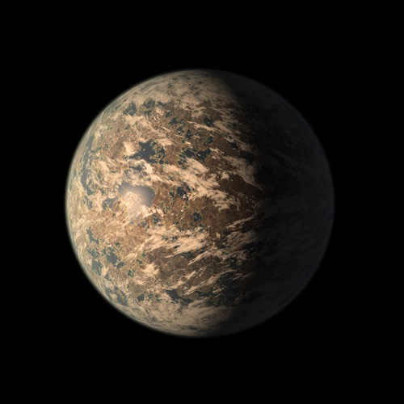
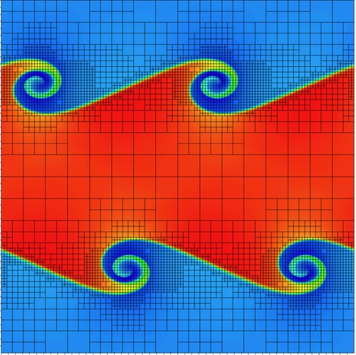
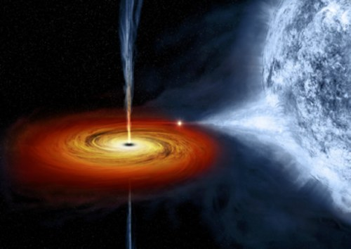

Davis Group

Black holes are stellar remnants that are so dense that nothing, not even light, can escape their gravitational pull. Nevertheless, systems that contain these "dark stars" are among the brightest sources in the universe. In this introductory course, aimed primarily at non-science majors, students will explore the seemingly paradoxical nature of black holes and evaluate the astronomical evidence for their existence.

This course is the first astronomy course taken by our undergraduate majors and introduces the tools of astrophysical problem solving. Students learn to apply basic physics and quantitative reasoning to astronomical questions, with topics including the night sky, observational methods and telescopes, the solar system, and planets orbiting other stars.

Computational methods are widely applied in all areas of astrophysical research, including data analysis, instrumentation, and theory. This course covers advanced computing skills that optimize the scientific return from using increasingly complex code bases and sophisticated code development tools. Using Python and C, we introduce widely applicable numerical methods while training students in standard code development practices.

Introduces the physics of basic radiation mechanisms and particle acceleration processes that are important in high energy phenomena and space science. Discusses applications to pulsars, active galactic nuclei, radio galaxies, quasars, and supernovae.